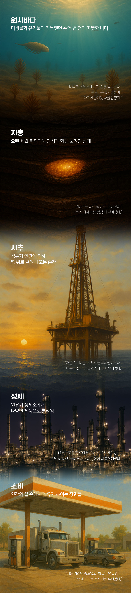
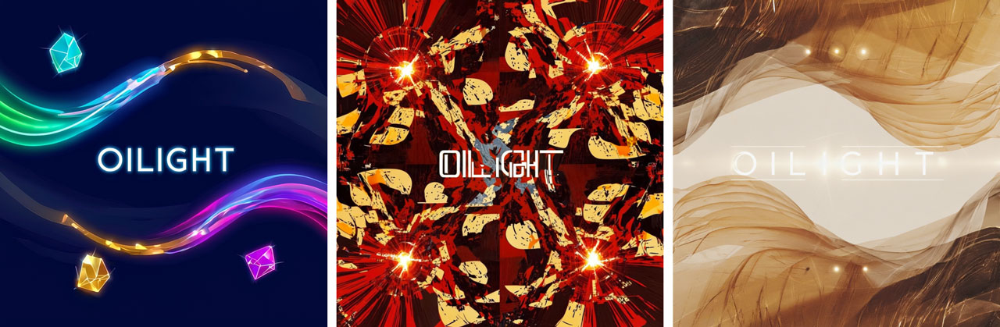

지난 호 AI+KNOC 주제는 ‘석유 자서전’이었죠. 이번 AI+KNOC에서는 에너지와 음악을 연결하는 새로운 실험을 시도해보았습니다. 노래로 석유를 표현한다면 어떤 멜로디가 떠오를까요? 석유를 주제로 가사를 만들고, AI와 함께 멜로디를 입혀 하나의 ‘석유 주제가’를 완성하는 프로젝트! 에너지에 감성적인 선율을 입히는 순간, 어떤 작품이 탄생할지 궁금하지 않으신가요? AI와 <석유사랑>이 함께 만든 특별한 노래를 지금 소개합니다.
이번 AI+KNOC는 Perplexity, ChatGPT, Suno, Runway와 함께했습니다.
‘노래로 석유를 표현한다면 어떨까?’ 이번 AI+KNOC는 그 질문에서
출발했습니다. 석유는 산업과 기술의 상징인 동시에 지구의 기억이자
우리 삶을 움직이는 보이지 않는 힘입니다. 그렇다면 그 이야기를
음악으로 옮긴다면 어떤 감정과 메시지가 담길까요?
AI와 함께 석유의 서사를 노래로 만들어보기로 했습니다. 프로젝트의
첫 단계는 ‘콘셉트 잡기’입니다. 노래는 이야기를 품고 있으니까요.
AI에게 물었습니다. “석유를 노래로 만든다면 어떤 이야기를
들려줄까?” AI는 석유의 태생, KNOC의 여정, 사람들의 땀, 그리고
미래의 비전을 주제로 수많은 아이디어를 쏟아냈습니다.
AI가 제안한 콘셉트 아이디어📝
- 지구 깊은 곳의 기억 – 공룡 시대의 숨결에서 시작되는 이야기
- 검은 금의 노래 – 세상을 바꾼 에너지의 목소리
- 여정 – 땅속에서 바다, 그리고 우리의 일상까지
- KNOC 히어로 – 세계를 누비는 개척자들의 노래
- 사람과 석유 – 에너지를 지탱하는 사람들의 이야기
- 변화의 시간 – 석유에서 미래 에너지로 이어지는 길
- 나의 MBTI는 OIL – 의인화된 석유의 성격을 담은 유쾌한 상상
- 에너지가 만든 일상 – 보이지 않지만 늘 곁에 있는 힘
- 친구, 석유 – 오래된 친구처럼 다가오는 석유
- 마지막 인터뷰 – 시대의 끝자락에서 석유가 전하는 고백
이 아이디어들은 곡의 가사를 만들고, 멜로디를 입히는 출발점이 됩니다. 이중 우리가 선택한 이야기는 ‘에너지가 만든 일상’입니다. 매일 아침 켜는 불빛, 출근길의 버스, 따뜻한 밥 한 그릇, 그 모든 순간 뒤에 숨어 있는 에너지의 목소리를 담은 노래. 눈에 보이지 않지만 늘 우리 곁에 있는 힘, 그 에너지가 만들어낸 평범하지만 소중한 하루. 이제 이 콘셉트를 바탕으로 가사를 만들어보겠습니다.
주제를 정했다면, 이제 이야기를 노래로 옮길 차례입니다. 가사는
노래의 메시지이죠. AI와 함께 먼저 핵심 키워드를 뽑고, 문장을
엮어봅니다. 키워드 ‘일상’, ‘빛’, ‘에너지’, ‘순간’을 넣어 1절과
2절로 구성된 곡 가사 초안을 만들어달라고 했습니다.
AI가 만들어준 첫 가사 초안은 충분히 멋졌습니다. 잔잔하고 서정적인
발라드 느낌이 일상을 따뜻하게 비췄죠. 하지만 이 노래는 ‘에너지가
만든 일상’을 주제로 한 만큼, 더 활기차고 메시지가 선명하게
드러나는 가사가 필요했습니다. 그래서 AI에게 세 가지 요청을
했습니다.
첫째, 활기찬 톤으로 바꿔줄 것.
초안은 서정적이었지만, 우리의 노래는 일상 속 에너지를 노래해야
한다.
둘째, 메시지가 명확할 것.
처음 가사 속 ‘너’는 누구인지 알 수 없었다. 주제가의 중심인
‘석유’를 가사에 직접 등장시키는 것이 좋겠다.
셋째, 더 풍부한 일상 장면을 담을 것.
아침 출근길, 커피 향, 저녁 네온사인 같은 장면을 넣어 우리의 하루를
살아 있는 노랫말로 표현해보자.
이 과정을 거쳐 AI는 새로운 가사를 완성했습니다. 활기찬 리듬 속에 아침의 햇살, 바쁜 도시, 퇴근길의 불빛까지… 우리가 살아가는 하루를 석유와 함께 노래하는 ‘에너지가 만든 일상’이 탄생했습니다. 여기서 한 가지 더 중요한 것이 있죠. 바로 곡의 이름 짓기입니다. AI에게 이 노래의 제목을 지어달라고 부탁했고, AI는 여러 개의 제목을 제안했습니다. 그중에서 가장 빛났던 이름을 선택했는데요. 그 이름은 바로 OILight(오일라이트)입니다. 석유(Oil)와 빛(Light)을 합친 이 제목은, 에너지가 켜는 불빛과 우리의 일상을 상징적으로 담아냈습니다.

이제 곡의 제목과 가사를 얻었으니, 다음 단계는 멜로디를 입히는 일입니다. AI 작곡 툴을 통해 어떤 소리와 리듬이 이 이야기를 완성할지, 음악이 만들어질 순간이 다가오고 있습니다.
AI 작곡 툴을 활용하면 몇 초 만에 다양한 스타일의 멜로디를 제안받을
수 있습니다. 활기찬 리듬, 일상을 밝히는 빛처럼 가벼우면서도 힘
있는 멜로디, 그리고 석유가 가진 에너지가 느껴지는 소리. 이러한
노래를 만들기 위해 AI 작곡툴을 열었습니다.
먼저, 가사에 맞는 분위기를 설정했습니다. ‘경쾌하고 산뜻한 팝
스타일’, ‘어쿠스틱과 일렉트로닉의 조화’, ‘인상적인 드럼 비트의
다이내믹 그루브 스타일’. 이 세 가지를 키워드로 넣자, AI는 다양한
샘플을 뽑아냈습니다. 가사가 들려주는 일상의 장면이 멜로디 안에서
다양한 리듬으로 살아 움직였습니다. 더욱 다양한 스타일로 곡을
변주할 수도 있습니다. 발라드, EDM, 재즈풍 등 무궁무진한 가능성이
열려 있죠. 여러분은 어떤 버전의 곡이 가장 마음에 드시나요?
경쾌하고 산뜻한 팝 스타일의 OILight
어쿠스틱과 일렉트로닉이 조화를 이루는 OILight
인상적인 드럼 비트의 다이내믹 그루브 스타일의 OILight
AI와 함께 만드는 석유 주제가 프로젝트의 여정을 마무리하는 마지막 단계는 바로 앨범 커버 만들기입니다. 음악의 첫인상은 종종 앨범 커버에서 시작되죠. 곡의 감정과 메시지를 시각적으로 전달할 수 있도록 세 가지 콘셉트의 앨범 커버를 만들어달라고 요청했습니다.

첫 번째는 경쾌하고 산뜻한 팝 스타일. 네온사인처럼 빛나는 색감과
리듬감 있는 패턴으로 에너지의 활기를 표현해달라고 했습니다. 두
번째는 어쿠스틱과 일렉트로닉의 조화를 담은 디자인으로 따뜻한 톤과
세련된 디지털 감각이 공존하는 디자인으로 요청했습니다. 세 번째는
강렬한 드럼 비트의 다이내믹한 그루브를 시각화해달라고 했습니다.
빛의 파동과 드럼의 타격감을 형상화한 디자인을 통해 음악의 박동을
그대로 전할 수 있는 앨범 커버가 필요하다는 설명을 덧붙이면서요.
AI가 만들어준 앨범 커버는 시작점일 뿐입니다. 여기에 자신의
아이디어와 감각을 더하면, 더욱 창의적이고 개성 있는 작품으로
확장해갈 수 있습니다.
처음 ‘석유 주제가를 만들어보자’는 발상에서 출발한 프로젝트는, 이제
노래와 앨범 커버까지 완성된 하나의 창작물로 마무리되었습니다.
기획부터 작사, 작곡, 그리고 시각화까지. 모든 과정에서 AI는 창작
파트너로서의 가능성을 보여주었습니다. 여러분은 이번 내용 중 어떤
부분이 가장 흥미로웠나요?
다음에는 AI와 함께 어떤 실험을 하게 될지, 계속해서 새로운 시도를
이어갈 AI+KNOC의 여정을 기대해 주세요. 앞으로도 AI와 함께
상상하고, 새로운 가능성을 만들어가요!